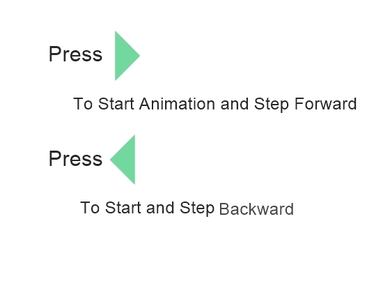

Circular Queue
Circular Queue is Linear DataStructure similar to Queue,But In circular queue the last node is connected back to the first node to make a circle.Elements are added at the rear end and the elements are deleted at front end of the queue.It also Follows FIFO(First-in,first-out) principle.
Circular Queue overcome the drawback of loss of access to memory by Queue.In queue front,rear are calculated with increment or decrement but In circular queue front,rear,are calculated differently
Front: front=(front+1)%capacity
rear: rear=(rear+1)%capacity
Size:
The front and rear indices can be used to find out the current size of the queue, that is, the number of elements currently in the queue. The value rear - front gives us the size, and when this value is negative, we simply add the capacity to this to give us the size. Thus in general we have
size = ( rear - front + capacity) % capacity.
